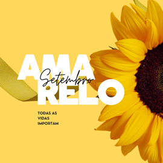

A saúde mental importa.
Vamos cuidar uns dos outros!
- Setembro é um mês especial para a conscientização sobre saúde mental e prevenção ao suicídio .
- Problemas de saúde mental, podem afetar significativamente a qualidade de vida
e,
em casos graves, levar a pensamentos suicidas.
Onde procurar ajuda?
- Ligue para o CVV - Centro de Valorização da Vida no número 188. É gratuito e confidencial.
- Procure um psicólogo ou psiquiatra para suporte especializado.
Alguma dúvida? Clique em saiba mais.
Saiba mais